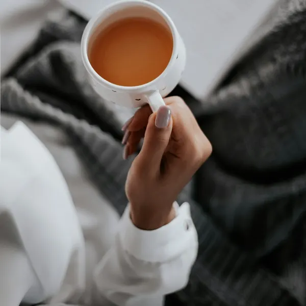
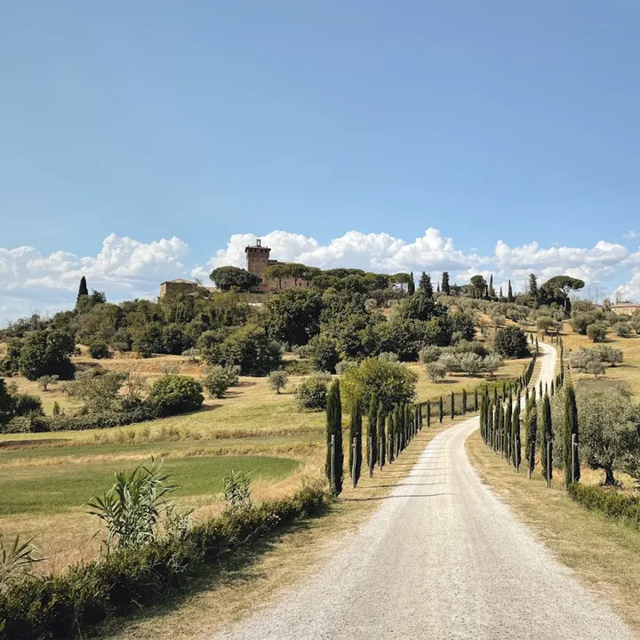
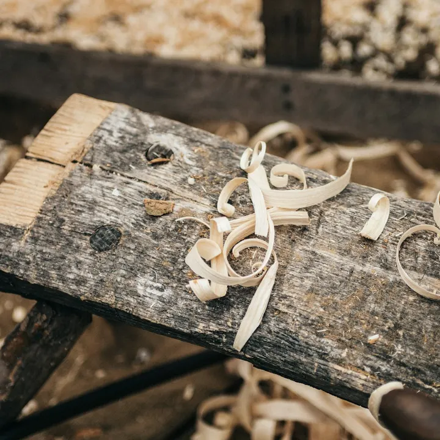
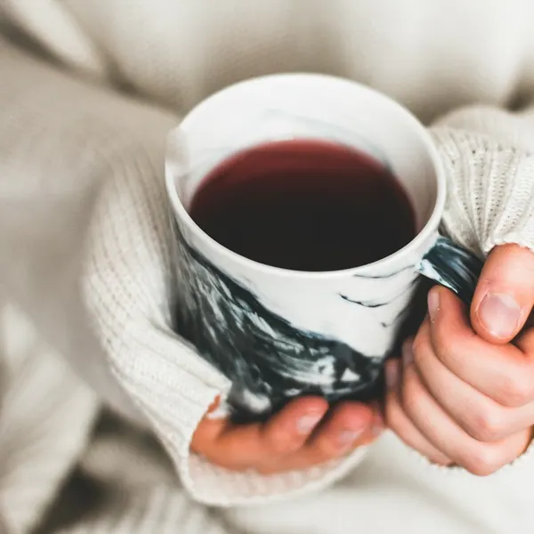
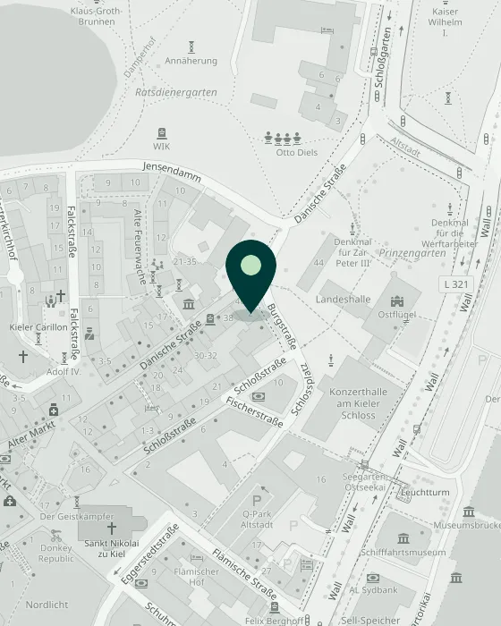
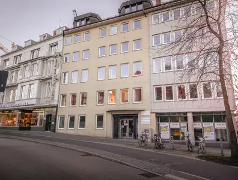
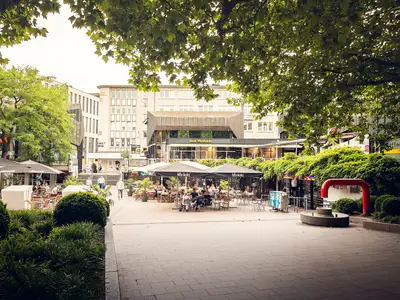
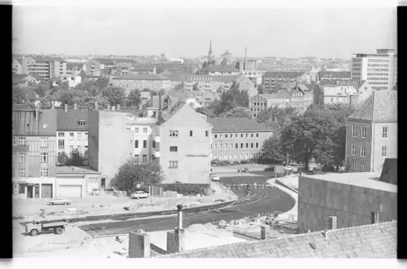
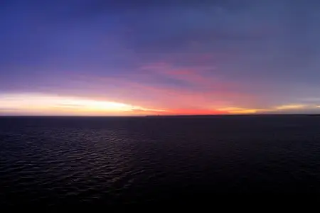
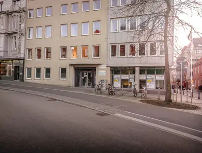

Ausführlich

Wir nehmen uns die Zeit, die Ihre Fragen brauchen. Niemand drängt Sie zu einer Entscheidung.
Zweite Meinung vom Nacken bis zum Becken.
Tippen Sie auf einen Wirbel: Jeder hat seine eigene Geschichte.
Als die Zusage fürs Medizinstudium kam, war mein kleiner VW-Bus schon gepackt, Richtung Italien. Und hätte es mit der Medizin nicht geklappt? Dann wäre ich heute wohl Tischler.


Zweitmeinung zur Wirbelsäule, vom Nacken bis zum Becken.

Wir nehmen uns die Zeit, die Ihre Fragen brauchen. Niemand drängt Sie zu einer Entscheidung.
Ich erkläre Ihre Bilder und Befunde so, dass Sie sie verstehen, und zeige Ihnen alle Wege, nicht nur den Eingriff.

Es geht um Sie und Ihren Alltag, nicht nur um Ihr MRT.
Burgstraße 2 in der Kieler Innenstadt, zwischen Altem Markt und Schloss. 4. Stock, mit Aufzug.
„Sie entscheiden. Ich gebe Ihnen die Orientierung dafür.“

Die Praxis ist eine Privatpraxis für privat Versicherte und Selbstzahler. Gesetzlich Versicherte können als Selbstzahler kommen.
Schreiben Sie mir über das Anfrageformular. Ich melde mich persönlich bei Ihnen, und wir finden in Ruhe einen Termin.
Abgerechnet wird nach der Gebührenordnung für Ärzte (GOÄ). Ob Ihre Versicherung die Kosten übernimmt, klären Sie am besten vorher mit ihr.
Ihre aktuellen MRT- oder CT-Bilder auf CD oder als Link, Arztbriefe und Befunde, die schriftliche OP-Empfehlung, falls es eine gibt, und eine Liste Ihrer Medikamente.
Ja. Auch nach einer bereits durchgeführten Operation ist eine Beratung möglich, etwa wenn Beschwerden geblieben oder neu aufgetreten sind.
Beide behandeln die Wirbelsäule. Die Neurochirurgie kommt vom Nervensystem her: Sie ist dort gefragt, wo Nervenwurzeln oder Rückenmark bedrängt werden.
Die Praxis liegt im 4. Stock der Burgstraße 2 und ist mit einem Aufzug erreichbar.
Bitte senden Sie Gesundheitsdaten nicht unverschlüsselt per E-Mail. Schreiben Sie in Ihrer Anfrage, dass Sie Unterlagen haben. Ich melde mich mit einem sicheren Weg.





Rund um die Burgstraße: Alter Markt, Schloss und Förde
Schreiben Sie mir kurz, worum es geht. Ich melde mich persönlich bei Ihnen, und wir finden in Ruhe einen Termin.